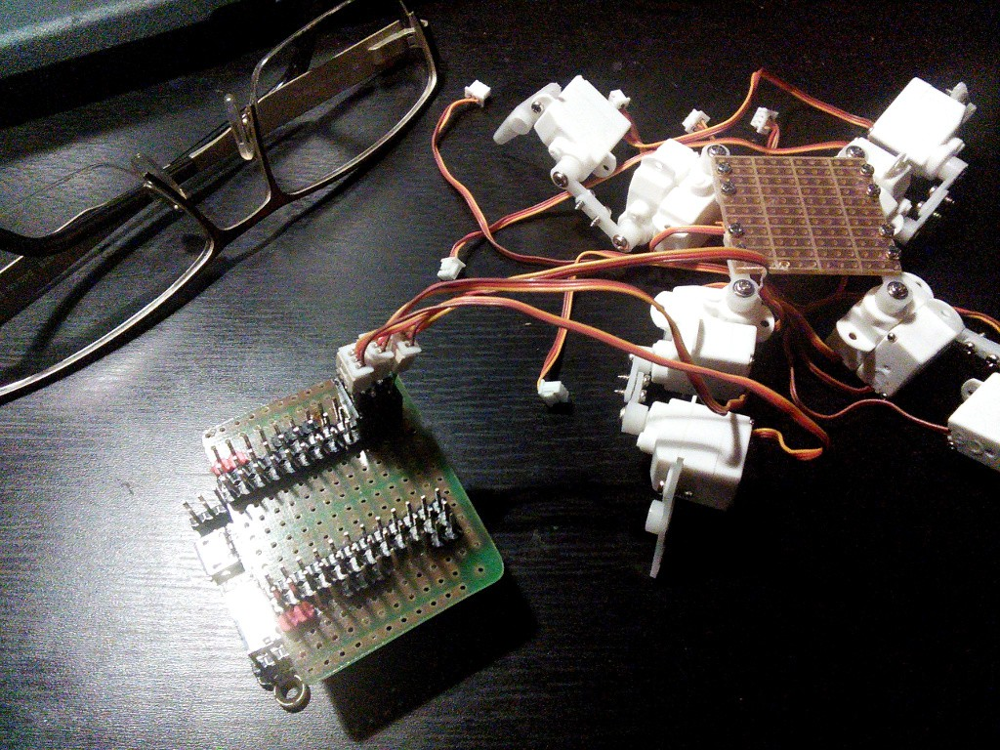
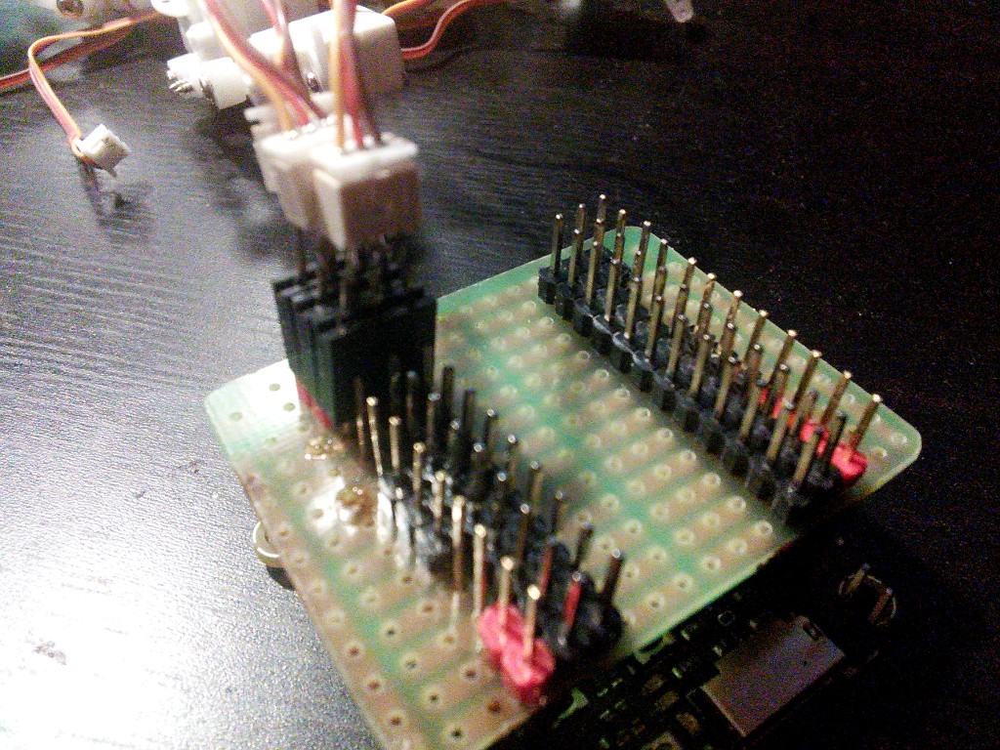

PyBoard¶
Published on 2014-11-13 in Pico-Kubik quadruped robot.
The pyboard has arrived, so I quickly made a servo shield for it, and tested the servos first with the pyb.Servo and then directly with pyb.Timer. Both seem to be working fine.
You can see that I had to make some adapters for the servo plugs. The pyboard uses 2.54 raster, and so does the servo breakout board, while the servo plugs and sockets have 1.27 raster.
I’m still waiting for VoCore to test it too. It’s smaller, has 1.27 raster, runs actual Linux, includes WiFi and an USB host that I could use to connect a camera module from a laptop – so overall, much more interesting to me. I can see that they got PWM to work on the GPIO pins, so it should be workable…